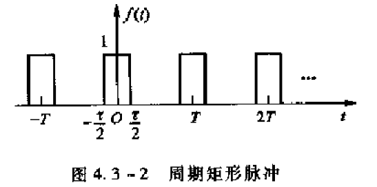
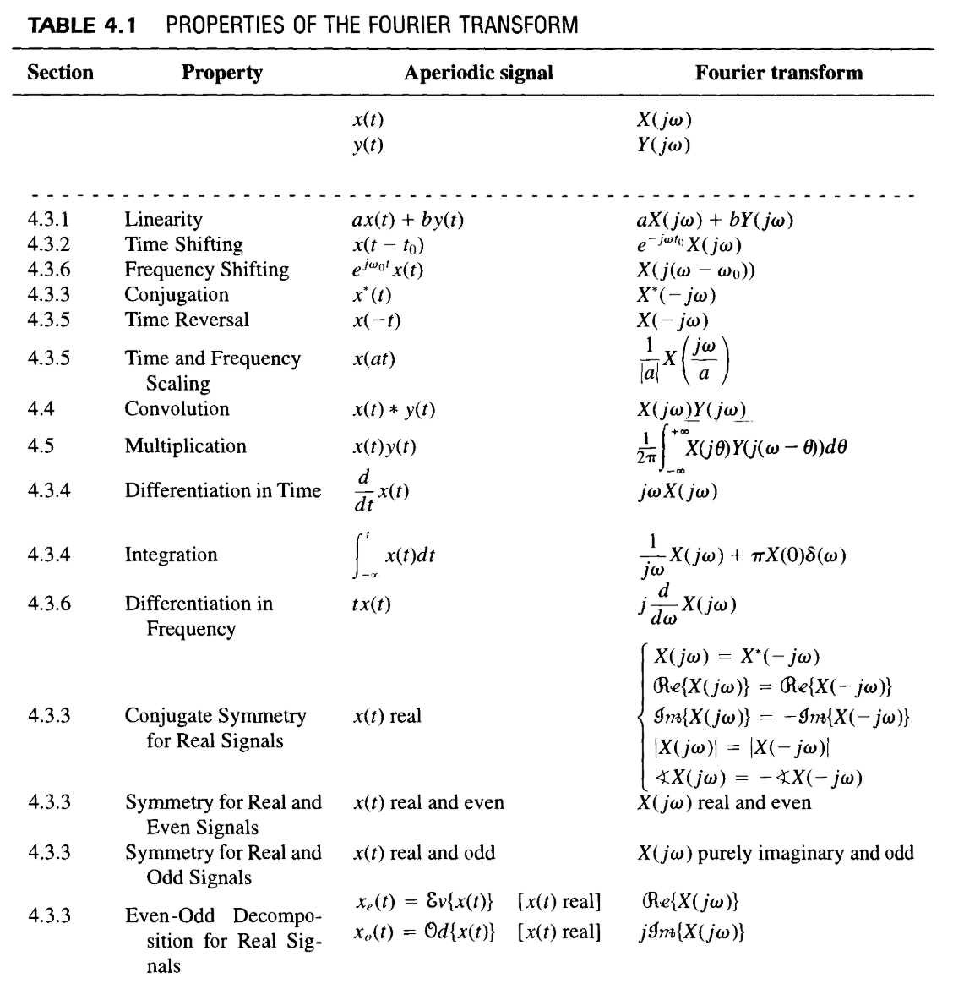
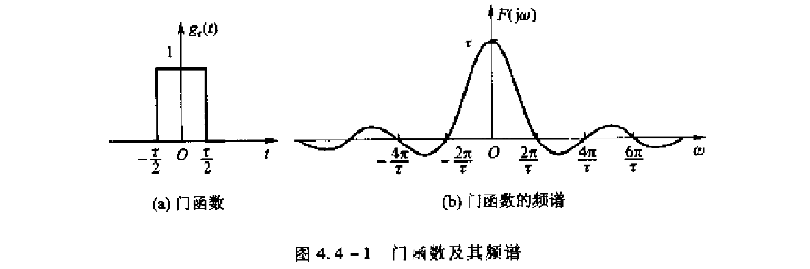
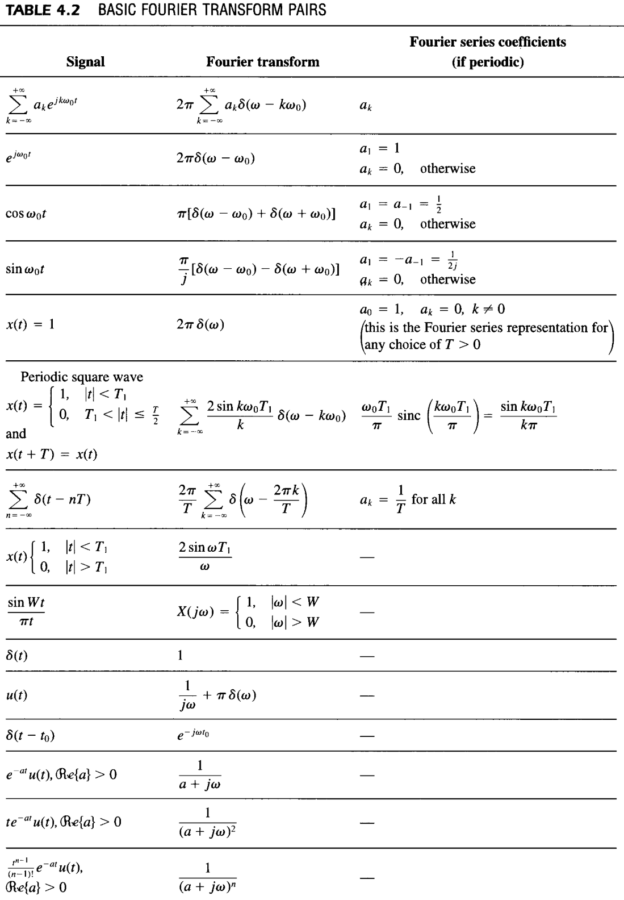
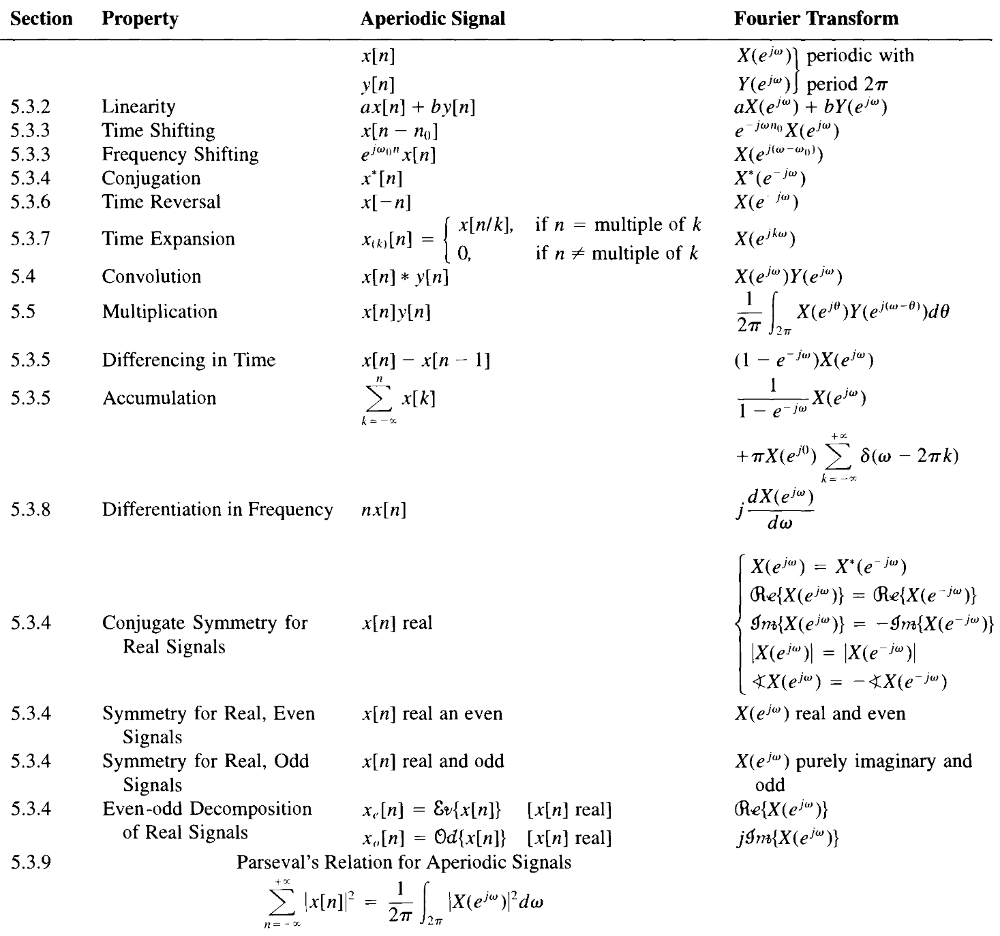
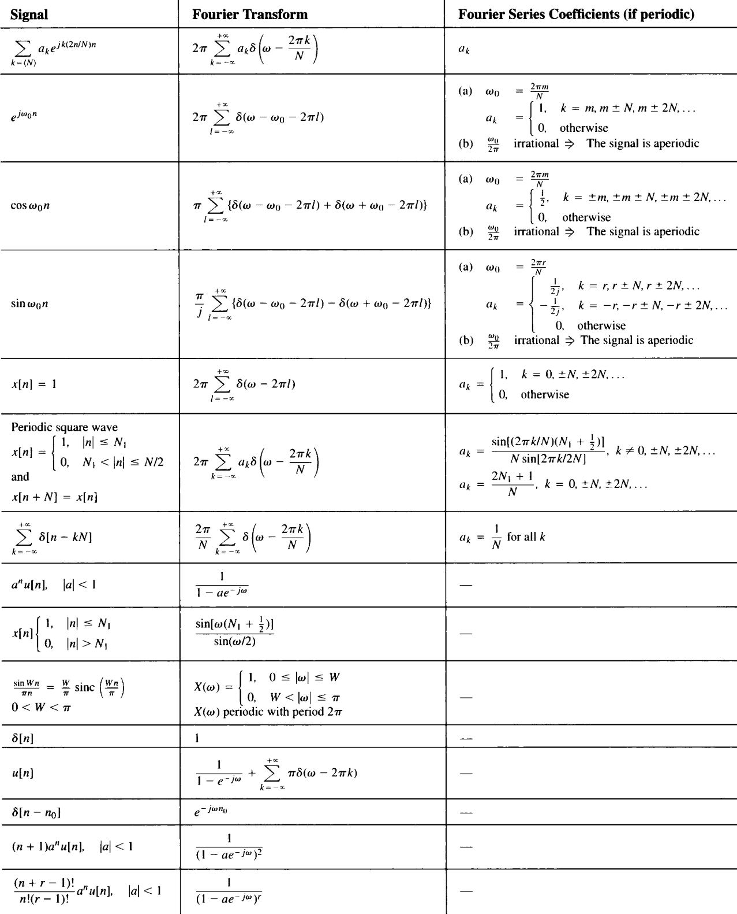
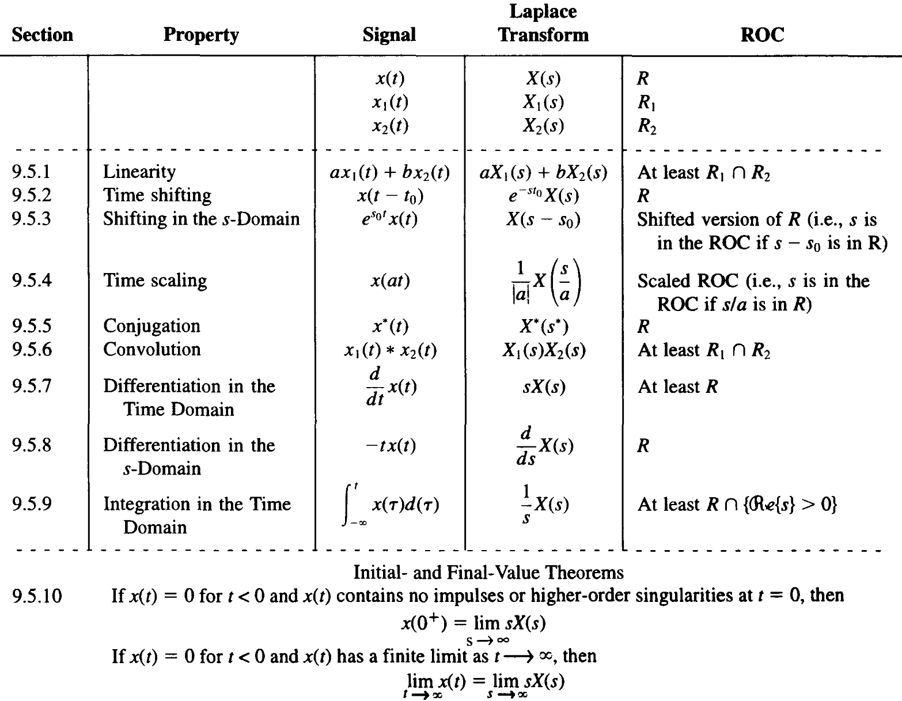
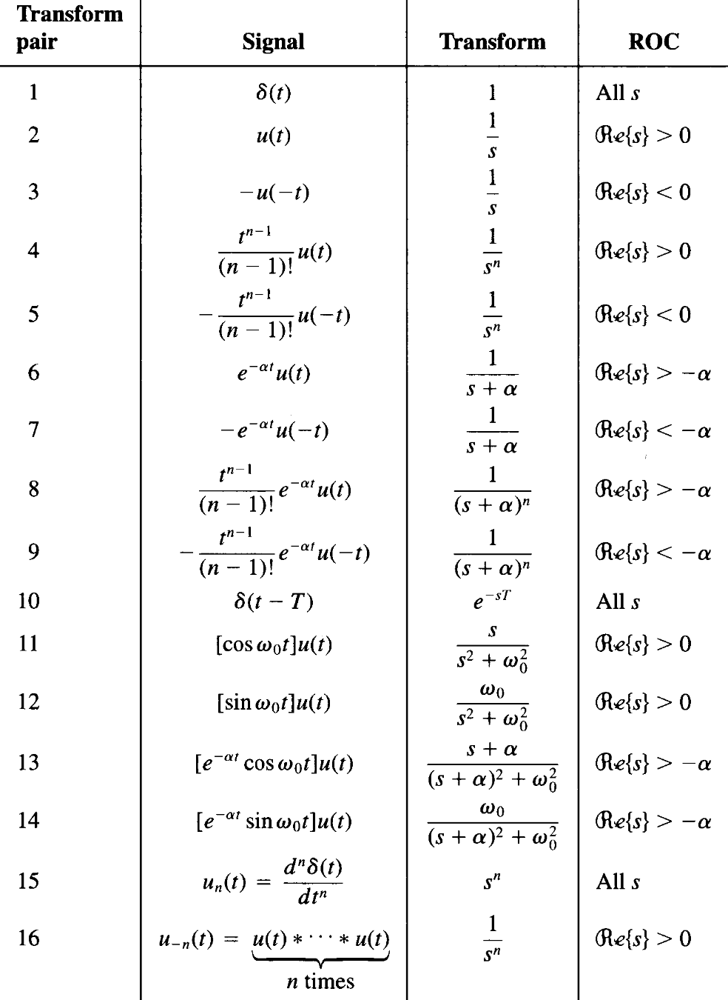
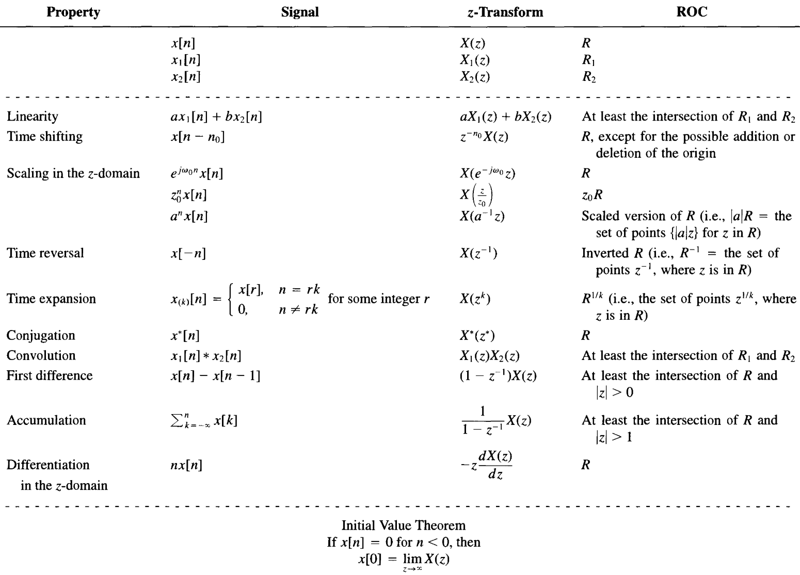
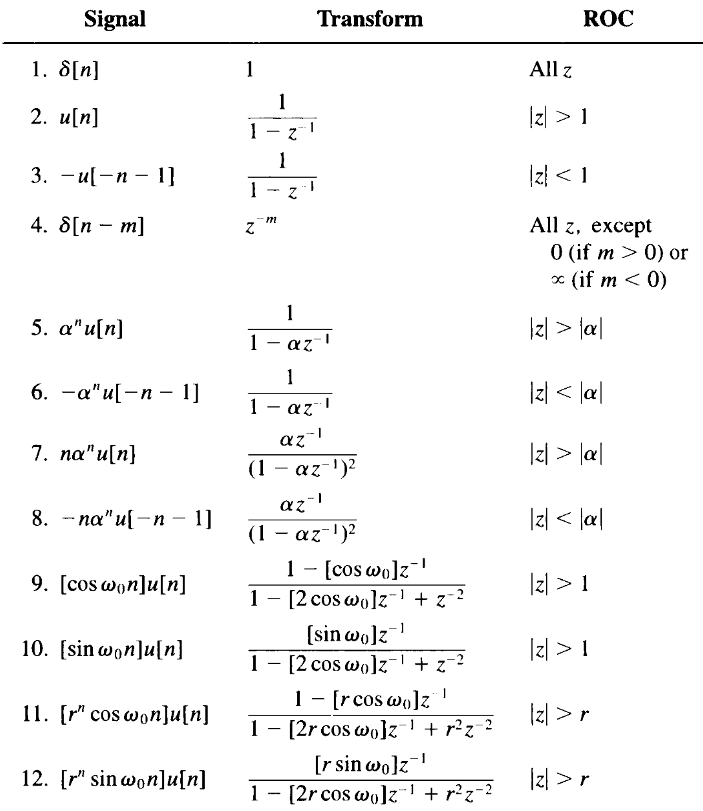

Useful Mathematical Formulas
This article will present:
- Identities
- Derivative formulas
- Integral formulas
- Taylor series
- Fourier transformation (include DTFT and DFT)
- Laplace transformation
- Z transformation
Identities
Trigonometric Function
Sum-product conversion
Limits
Derivative Formulas
Theory
Basic
Trigonometric Function
Integral Formulas
Theory
Integration by substitution
or
For finite integral
when $a=\varphi(\alpha), b=\varphi(\beta)$
Integration by parts
Advanced
Series
Arithmetic series
Geometric series
Others
Taylor Expansion
Theory
Example
Fourier Series
Theory
Convolution
Complex exponentials as eigenfunctions (A signal for which the output of the system is a constant times the input)
Thus, we may express
If the signal is periodic for T
Complex
when $T=2\pi/\omega_0$
where
Traditional
when $T=2\pi/\omega_0$
where
Example
Periodic square wave

we have
Fourier Transformation
Theory
Properties
Linearity
Time & frequency shifting
Conjugate symmetry
Differentiation & integration
Time & frequency scaling
Duality
Parseval's relation
Convolution

Fourier Transformation for Periodical Signals
A periodical signal can be expressed in terms of Fourier series as
If Fourier transformation is applied to both sides
As a example, we may calculate the Fourier transformation of a periodical pulse signal $\delta_T(t)=\sum_{k=-\infty}^{\infty}\delta(t-kT)$
Example
Square pulse

we may conclude by comparing with previous example that Fourier series coefficient can be drawn by Fourier transformation with

Discrete Time Fourier Transformation


Laplace Transformation
Region of convergence (ROC)
- The ROC of X(s) consists of strips parallel to the $j\omega$-axis in the s-plane.
- For rational Laplace transforms, the ROC does not contain any poles.
- If x(t) is of finite duration and is absolutely integrable, then the ROC is the entire s-plane.
- If x(t) is right sided, and if the line $\mathcal{Re}\{s\}=\sigma_0$ is in the ROC, then all values of s for which $\mathcal{Re}\{s\}>\sigma_0$ will also be in the ROC.
- If x(t) is left sided, and if the line $\mathcal{Re}\{s\}=\sigma_0$ is in the ROC, then all values of s for which $\mathcal{Re}\{s\}<\sigma_0$ will also be in the ROC.
- If x(t) is two sided, and if the line $\mathcal{Re}\{s\}=\sigma_0$ is in the ROC, then the ROC will consist of a strip in the s-plane that includes the line $\mathcal{Re}\{s\}=\sigma_0$.
- If the Laplace transform X(s) of x(t) is rational, then its ROC is bounded by poles or extends to infinity. In addition, no poles of X(s) are contained in the ROC.
- If the Laplace transform X(s) of x(t) is rational, then:
- If x(t) is right sided, the ROC is the region in the s-plane to the right of the rightmost pole.
- If x(t) is left sided, the ROC is the region in the s-plane to the left of the leftmost pole.
Note on expansion, for
we need to solve the roots of $A(s)=0$
For single root
where
For conjugate roots
where
For multiple roots
where


Z Transformation
ROC
- The ROC of X(z) consists of a ring in the z-plane centered about the origin.
- The ROC does not contain any poles.
- If $x[n]$ is of finite duration, then the ROC is the entire z-plane, except possibly $z=0 $ and/or $z=\infty$.
- If $x[n]$ is a right-sided sequence, and if the circle $|z|=r_0$ is in the ROC, then all finite values of z for which $|z|>r_0$ will also be in the ROC.
- If $x[n]$ is a left-sided sequence, and if the circle $|z|=r_0$ is in the ROC, then all finite values of z for which $|z|<r_0$ will also be in the ROC.
- If $x[n]$ is two sided, and if the circle $|z|=r_0$ is in the ROC, then the ROC will consist of a ring in the z-plane that includes the circle $|z|=r_0$.
- If the z-transform $X(z)$ of $x[n]$ is rational, then its ROC is bounded by poles or extends to infinity.
- If the z-transform $X(z)$ of $x[n]$ is rational,
- If $x[n]$ is right sided, then the ROC is the region in the z-plane outside the outermost pole. Furthermore, if $x[n]$ is causal, then the ROC also includes $z=\infty$.
- If $x[n]$ is left sided, then the ROC is the region in the z-plane inside the innermost nonzero pole. Furthermore, if $x[n]$ is anti-causal, then the ROC also includes $z=0$.


Discrete Fourier Transformation
Reference
- 管致中, et al. 信号与线性系统，第五版.
- Alan V. Oppenheim, et al. Signals and Systems, Second Edition.
- Post link: https://triblemany.github.io/archives/ffa08d7c/useful-mathematical-formulas.html
- Copyright Notice: All articles in this blog are licensed under BY-NC-SA unless stating additionally.